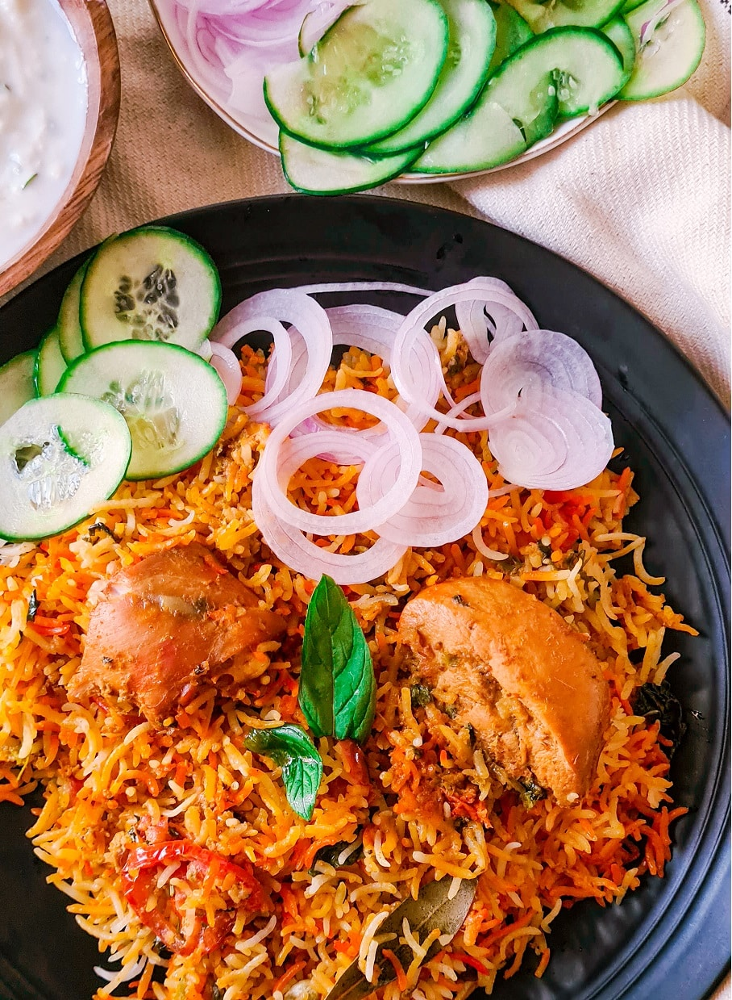

Biryani

Description
Behold! An authentic Chicken Biryani recipe with simple, easy-to-follow instructions (no curveballs!) and mouthwatering, traditional Pakistani and Indian flavor. This recipe includes tips on how to get fluffy rice, tender chicken, and the distinct biryani taste. Tested to perfection!
Ingredients
- 1 kg chicken
- 1 kg rice
- 1/2 kg onions
- 1/2 kg tomatoes
- 1/2 kg yogurt
- 1/2 kg potatoes
- 1/2 kg carrots
- 1/2 kg peas
- 1/2 kg green beans
- 1/2 kg cauliflower
- 1/2 kg cabbage
- 1/2 kg capsicum
- 1/2 kg green chillies
- 1/2 kg garlic
- 1/2 kg ginger
- 1/2 kg coriander
- 1/2 kg mint
- 1/2 kg lemon
- 1/2 kg oil
- 1/2 kg ghee
- 1/2 kg salt
- 1/2 kg red chilli powder
- 1/2 kg turmeric powder
- 1/2 kg cumin powder
- 1/2 kg coriander powder
- 1/2 kg garam masala
- 1/2 kg biryani masala
- 1/2 kg black pepper
- 1/2 kg cloves
- 1/2 kg cinnamon
- 1/2 kg cardamom
- 1/2 kg bay leaves
- 1/2 kg star anise
- 1/2 kg mace
- 1/2 kg nutmeg
- 1/2 kg saffron
- 1/2 kg kewra
- 1/2 kg rose water
Steps:
- Wash the rice and soak it in water for 30 minutes.
- Heat oil and ghee in a large pot.
- Add onions and cook until golden brown.
- Add ginger, garlic, and green chillies. Cook for 2 minutes.
- Add chicken and cook until it changes color.
- Add tomatoes and cook until they become soft.
- Add yogurt and all the spices. Mix well.
- Add water and bring it to a boil.
- Add soaked rice and cook until it is 70% done.
- Add all the vegetables and cook for another 5 minutes.
- Add saffron, kewra, and rose water. Mix well.
- Cover the pot with a tight lid and cook on low heat for 15-20 minutes.
- Turn off the heat and let it rest for 10 minutes.
- Fluff the rice with a fork and serve hot.